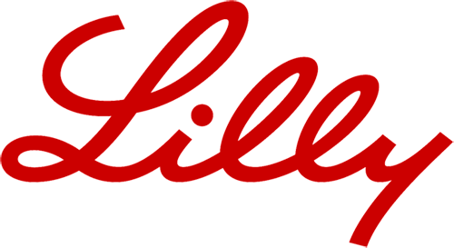
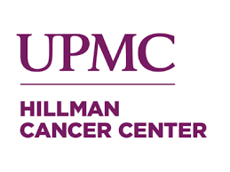
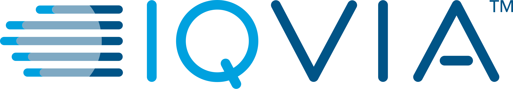

Sonish Sivarajkumar
Research Scientist - Deep Learning and Generative AI
I'm a Research Scientist (Advisor) in Generative AI at Eli Lilly and Company, where I design and develop AI-driven research solutions that accelerate biomedical discoveries and advance clinical trials. My research spans deep learning, generative AI, and clinical natural language processing, with a focus on translational medicine and real-world evidence. 5+ years designing and developing AI/ML systems across pharma, biotech, and academic research.
About Me
I am a Research Scientist specializing in Deep Learning and Generative AI at Eli Lilly & Co. My research focuses on designing and developing AI-driven research solutions that accelerate biomedical discoveries and advance clinical trials, with particular expertise in translational research, real-world evidence, and the secondary use of EHRs.
My current research involves developing generative AI systems for drug discovery and statistics, architecting end-to-end solutions for immunology and protein chemistry, and building AI agents to optimize clinical trials. With 5+ years of research experience across pharma, biotech, and academic institutions, I am passionate about bridging AI innovation and clinical impact through rigorous scientific research.
I completed my PhD in Intelligent Systems at the University of Pittsburgh, where my research focused on Clinical Natural Language Processing and developing innovative approaches for extracting insights from Electronic Health Records using Large Language Models. My work has resulted in 20+ peer-reviewed publications in leading journals and conferences.
Professional Experience

Research Scientist (Advisor) - Generative AI
Eli Lilly and Company | 2025 - Present
- Generative AI in Discovery and Statistics
- Architected and developed end-to-end Generative AI solutions for immunology and protein chemistry, enhancing research capabilities
- Building AI Agents to optimize clinical trial adjudication processes, improving accuracy and efficiency
- Collaborated with cross-functional teams to integrate AI technologies, leading to a 25% reduction in research timelines
Tech: AI Agents, Deep Learning, Generative AI, Clinical NLP, Bioinformatics, Information Retrieval, Protein Chemistry, Sequence Analysis, Reinforcement Learning
Research - NLP and Predictive Analytics
Eli Lilly and Company | 2024
- Designed and developed a generative AI-based system utilizing GPT-4, LLAMA, and Mixtral to enhance clinical decision-making
- Built NLP pipelines for precise extraction of cardiovascular events from EHRs and clinical trial data
- Implemented an LLM-powered system to automate cardiovascular outcome adjudication, improving accuracy in clinical trials
Tech: AI Agents, Natural Language Processing (NLP), Generative AI, Translational Research, Predictive Analytics, Clinical Trials, Retrieval-Augmented Generation (RAG), Large Language Models (LLM), Clinical NLP

Research Scholar
UPMC Hillman Cancer Center | 2021 - 2025
- Developed predictive models for hematology oncology treatment outcomes using deep learning, enhancing patient care strategies
- Utilized advanced NLP to mine immunotherapy treatment outcomes from clinical notes, contributing to personalized treatment plans
- Automated cancer registry data extraction, improving data accuracy and availability for research initiatives
- Collaborated with clinicians and data scientists to translate complex clinical data into actionable insights, advancing oncology research
Tech: AI Agents, Large Language Models (LLM), Retrieval-Augmented Generation (RAG), Machine Learning, Data Science, Foundational model, Natural Language Processing (NLP), Knowledge Graphs, Generative AI, Representation Learning, Translational Research, Bias and Ethics in AI, Artificial Intelligence (AI), Electronic Health Records (EHR), Data Mining, Clinical NLP
Data Scientist
Merck & Co., Inc. | 2023
- Global Medical & Scientific Affairs division
- Received awards for US Cervical Cancer Analytics and Breast and Gyn Oncology Analytics
- Applied advanced analytics to real-world evidence and clinical data
Tech: Large Language Models (LLM), Knowledge Graphs, Real World Evidence (RWE), Electronic Health Records (EHR), Data Science
Research Scientist - Predictive Analytics
Genentech (Roche) | 2022
- Part of the gRED Early Clinical Development Informatics (ECDi) team working on Clinical Operations in trial design
- Building predictive tools and improving drug and target/biomarker discoveries
- Developed predictive clinical trials site recommendation tool, using advanced AI and NLP techniques
Tech: Large Language Models (LLM), Knowledge Graphs, Real World Evidence (RWE), Knowledge Discovery, Data Science, Recommender Systems

Data Scientist
IQVIA | 2020 - 2021
- Part of IQVIA AI Centre of Excellence (CoE)
- Built predictive and prescriptive analytics tools to support better decisions and more reliable outcomes
- Built tools to optimize the commercial effectiveness with market intelligence about diseases, competitors, and patient journeys
Tech: Hive, GitLab, Triton, Hadoop, Machine Learning, Deep Learning, PyTorch, Software Deployment, Cloud Computing, Apache Airflow, PySpark, Data Engineering, Python, Natural Language Processing (NLP), Knowledge Graphs, Docker
Research Areas
Technical Expertise
Research Focus
Generative AI for Drug Discovery Research
Developing novel generative AI methodologies for drug discovery applications, focusing on immunology and protein chemistry research. Investigating end-to-end AI solutions to accelerate biomedical research workflows and enhance discovery capabilities.
Clinical AI and NLP Research
Advancing clinical natural language processing research through large language models for healthcare applications. Research focuses on cardiovascular event extraction, clinical trial optimization, and automated adjudication methodologies.
Translational Research & Real-World Evidence
Conducting research on AI-driven solutions for translational medicine and secondary use of Electronic Health Records. Investigating methodologies for oncology treatment outcome prediction and personalized healthcare research.
Publications
20+ peer-reviewed publications in leading journals and conferences across clinical NLP, generative AI, and biomedical informatics
Education
Ph.D. in Intelligent Systems (Artificial Intelligence)
University of Pittsburgh | Aug 2021 - Jul 2025
School of Computing and Informatics
Thesis: Natural Language Processing for Information Extraction and Predictive Modeling in Healthcare
Research Areas: Clinical Natural Language Processing, Information Retrieval & Extraction, Knowledge Discovery from Clinical Texts, Large Language Models, Foundation Models for Healthcare, Representation Learning and Electronic Health Records (EHRs)
Advisor: Dr. Yanshan Wang | Fellowship Recipient: 2021, 2022, 2023
B.Tech. in Electrical Engineering
APJ Abdul Kalam Technological University | 2016-2020
Government Engineering College, Thrissur, India
Contact
sonish.sivarajkumar@gmail.com
Current Position
Research Scientist - Deep Learning and Generative AI
Eli Lilly and Company
Location
Boston, MA